Search From the Start：从预训练开始学习搜索
Kaustubh Ponkshe、Gyung Hyun Je、Stefan Taga、Colin Raffel 与 Martin Jaggi 研究如何把搜索调用和结果阅读直接纳入语言模型预训练。一作主机构为洛桑联邦理工学院，合作机构为多伦多大学。论文于北京时间 2026 年 11 月 20 日提交 v1，11 月 23 日进入 arXiv 公告。本文使用其公开预印本。作者的训练工件集合已核验可访问，未执行复现。 论文入口 · 作者训练工件
部署中的语言模型越来越能访问搜索工具，预训练却依然主要预测静态文本，搜索通常在后训练才引入。论文追问能否保留下一词预测目标，同时用普通文档规模化教会模型发起搜索并利用返回证据。
1. 背景和问题
1.1 搜索调用、使用证据与事实记忆
自回归模型读到一段文字时，会利用前缀和参数中保留的知识预测续文。大量可复用的文法和推理模式适合通过同一个预测目标学习，孤立事实却更依赖训练分布是否频繁复述对应关联。一家公司改名、一个商品规格变化或一条网页维护记录更新，均可能让旧权重里有信心的答案逐步失效。对参数量较小的模型，这一问题更突出。权重预算既要处理语言与任务，又承担一部分难由一般规律补出的事实记忆。把一部分事实留在外部索引，能在更新索引时改变可访问内容，但价值取决于语言模型能否提出具体查询并读懂返回证据。一条工作流可以拥有可用的搜索接口，同时在回答中频繁忽略它或取错材料。
一种常规做法在静态预训练之后，以工具示范或强化学习教会模型操作接口。该做法有清晰的工程边界，因为不用改预训练的数据加工，工具系统和模型能各自维护。它也让外部回填片段、查询边界与分布偏移在学习后段才出现。训练阶段若始终以权重和已见文本预测，模型可能学到优先继续生成的习惯；进入工具轨迹后，再教会模型在不充分的信息面前停一下、用前缀表达缺失条件和根据第一个结果改写下一次查询。论文把这些行为分开。前两个与调用决策有关，第三个涉及语言模型本身是否因返回的新证据而改变续文。只要评估允许工具或测试时强制启动，最终正确率就把这些环节混在一起，需要额外实验确定改动落在哪里。
已有工作还把检索加入专门结构，或建实体关系表，让模型输出键、取回给定值，再回到自回归生成。前者可能在预训练中联合更新检索编码器及注意力路径，后者对实体关系和词典覆盖要求更明确，信息更新受索引接口约束。本文处理的是普通段落里多样的开放查询。它保留原文顺序和通常的解码器架构，让文本查询、搜索响应与原文续写共同出现在训练的因果序列里。因而同一句话能提供两个监督动作：检索开始点之前的原文能教模型什么时候直接续写，某些剩余不确定的位置又可用插入的调用标记练习求证。更早引入检索机会有理论动机，是否有净收益仍需要同语料、相近训练预算和相同任务协议来判断。
1.2 把普通文档变成搜索轨迹的约束
网页天然没有可直接消费的工具记录。作者从文本预测角度反推：假如人只看到前半句，在哪些词之前提出一个可回答的问题，有机会拿到能帮助理解后半句的材料？按这条规则合成数据，有三个阶段需要明确分隔。标注器能够事后读到全文，从中挑选值得插入的位置。生成出来的查询只能使用位置以前的信息，推理模型也只会在这个条件下提出问题。搜索结果从外部检索独立得到，过滤流程可以利用后文，判断这条训练样本是否有联系。只要把三段混在一起，模型就可能被教去生成含有答案的查询，离线命中率虽高，评估部署时却没有先知信息。即使查询生成严格只读取前缀，在原文同源副本进入索引时仍可能导致证据近乎抄回原始后缀，因此去重和跨期版本同样影响解释。
如何选频率也决定开销和学习信号。每页都插大量短查找可能让启动符接近一个高频格式，导致本来能从原文判断的地方也出现调用。只围绕少数命名实体又可能让模型学会日期和账号等简单槽位，而学不会跨句的属性限制。论文用百科语料建立可解释小规模流程，再用 DCLM-Edu 网页段落验证扩展到不同文体。两边均依赖同一套标注器，索引选取、返回长度和可用语料规模却不完全相同。评价数据来源、模型规模和训练词元预算必须一起看，不能直接将 DCLM-Edu 与 Wikipedia 的平均分差解释成单一因素。
有用的搜索结果也不一定和源文本逐字重叠。为训练构造监督时，可以用少重叠但可靠的转述、同义信息或多个互补片段作为证据；如果过滤依据过度依赖字面相似，可能错过这些样本。相反，词汇接近只意味着这一段对某个查询看起来相关，事实仍有可能过期甚至相反。作者选择可规模化的简单检索与过滤，使对照易重复，也把正确辨别证据这一任务留给后续工作。按数据生成过程阅读该论文，重点不是把文档关联改写成一个无条件真值标签，而是识别哪些监督来自调用位置、哪些来自外部结果、哪些来自原文续写，对应模型可改进的不同阶段。
1.3 怎样区分学到搜索与拿到更好的材料
日常检索增强服务可让较强工具给所有模型同一证据，也可让每个模型决定自己的查询和返回。前者更接近检测阅读器质量，后者测的是查询与阅读的配合。QueryLM 同时提供这两档实验。基座主结果里，常规同预算模型借用对应 QueryLM 的查询及检索结果，减少检索器输入差异。经过共同搜索微调后，双方以各自产生的查询运行整个系统，检验优势是否在一套后训练下继续出现。另用同一外部模型替换查询，于固定量级做交叉实验。这些组合让研究者至少能区分方向，仍缺少对开放环境中是否主动查找、对多次搜索如何分配预算、能否拒绝冲突和异质证据的完整验证。
这一设计也适合检索推荐系统的工具链。用户问某部影片在特定地区何时可看，候选商品只写了尺寸却缺少规格版本，或者生成排序解释需要验明某条用户历史的时间范围。服务上的可行方案是把能快速确定字段的部分留在查询构造，把证据核验交给可靠索引，把依赖逻辑交给模型。研究问题于是变得可分解：模型是否知道自己缺什么，它找到了什么，最终答案是否被找到的内容支持。与论文完全对应的只是调用与证据使用这两部分。日志时效、权限、归因要求和调用失败有另外的业务约束，对照线上时不能把公开问答提升直接用作指标预测。
2. 方法
2.1 同一文档中的调用位置与查询生成
QueryLM 的处理链把文档标注器与最后从头训练的模型分开。先从 2023 年 11 月英文 Wikipedia 中取一万篇符合长度条件的文章做种子池。GLM-5.2 读全文，选择在名称、日期、数量或更远上下文有关的事实之前插入。第二次只提供插入点前 1,600 字符，令教师为该位置写查询。用搜索响应空缺、源文重复检查等规则处理候选，再用种子训练 Gemma 4 E4B 的 LoRA 标注器。种子大约每篇二十次查询，训练验证按九比一划分。附录说明种子没有额外的相关性强筛，因为过强筛选曾压低学生标注器发出查询的频率。这个小型标注器完成后才扫完整语料，它并非论文最终问答的 QueryLM。
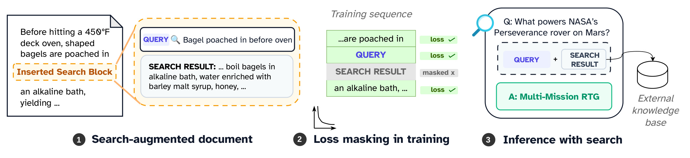
图左以烘焙段落为例，原始文本在叙述烘烤之前的烫面环节，插入块只用已知上下文去问使用何种处理，召回的片段给出碱性水浴等相关条件，原来的段落还按原顺序保留。中间的四类位置说明，原文前缀、query 和恢复生成的原文后缀会各自提供预测损失，而灰色搜索结果只被读取。若训练也监督模型把取回文本逐字写出来，部分优化预算就会用来记忆服务输出，相同接口来回一次的原始分工会失真。右侧是实际服务，模型先产生查询，知识库才返回结果；若已经到答案需要的证据齐备，继续生成答案。同一训练模板把是否跨到工具阶段与答案如何参考文档放到一个序列中。图中的两次案例是为了让读者看清数据形状，不是有关事实正确性的实验对照。真正有可比证据的是后面的同预算模型、受控返回交换和问答结果。架构读图还要注意，一个位置在训练能被插入，是因为标注流程见过完整文档并挑选过候选，推理侧模型则只有当时的用户问题与历史，未必知道现在需要哪类来源。论文主评估还预先推入启动标记，架构上具备自然发起能力和主结果从自然调用中获得是不同结论。图中不存在要求新增跨注意力读头，也没有额外的产线搜索评分器参与所有预测。工具对话中事件的准入由推理驱动，查询频率、权限检查和超时依旧要在外部服务管住，模型缓存会实际看到新的查询和响应词元。把这条分工持久保留，才可替换搜索后台并单独核验返回质量。
将长文分好的每条非增强序列交给标注器一次因果前向。整个前向可并行计算各前缀的调用概率，只有真正选择的若干位置需要连续生成一串 query。附录补充保留点彼此至少相距四十字符，贪心生成的查询上限二十四词元。回填之后用原始后缀前 260 字符与响应做词项重合，阈值为 ROUGE-1 F1 0.1。这是数据构建期的后验选择，训练好的模型在问答时不调用它。标注器监督自身的原文、查询、工具边界和轮末标记，掩码指令与响应正文；和下面最终模型的响应标签规则属于不同训练对象。
符号解释：$x$ 是长为 $T$ 的原始标注序列，$i$ 是原文的词元位置，$M_\phi$ 为微调的标注器，$\pi_i$ 为当前位置后立即发出查询起始符的概率，$\tau$ 为候选触发线，$A(x)$ 为过线的位置集合。式子说明在原始序列上批量完成位置评分，实际保留的位置还受距离限制及召回后数据过滤影响。模型较常输出工具标记并不保证关键词能找到证据，后段查完再筛是为了减少使原文预测变难的无关回填。
2.2 从本地索引构造返回证据
预训练规模下每次直接调用互联网搜索既难控制费用，也无法稳定冻结数据。作者用 Sphere 的约 1.34 亿网页集合搭建 BM25 索引，取分数最高的十段，再按 query 的词干重叠选句。种子步骤使用 FineWeb-Edu 并用小模型压缩响应，整库步骤用简单处理减少标注成本。作者在两个正式语料上采用不同返回上限，Wikipedia 约四百字符、DCLM-Edu 约八百字符。Table 2 的受控默认响应对照以六百字符为一组，不能把该数字覆写为整篇训练数据的统一上限。过滤阶段将返回与真实后缀做重合判断，残余噪声进入最终上下文，让模型接触可用但并不完美的返回。
符号解释：$a_i$ 是第 $i$ 个已选插入点，$p_i$ 为该点的原文前缀，$s_i$ 是继续预测的真实后缀，$q_i$ 是标注器仅据前缀而生成的查询，$r_i$ 是从索引结果抽选的文本，$\operatorname{Retrieve}$ 表示实际检索及句子选取。这组式子是 §3.1–3.2 的等价记法。后缀可以校验制作的数据，但查询模块接口不接受后缀；从而训练样本中的检索行为更接近推理时可做的动作。阈值、去重和本地索引选择仍会改变保留下来的文档构成。
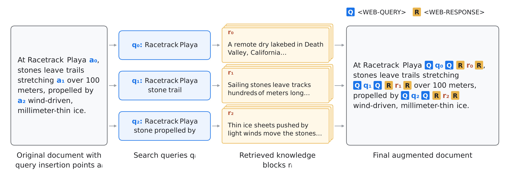
图分四列，第一列的三个下标标明插入点坐落在地名、轨迹距离和运动原因之前或旁边。第二列的查询分别以地名、石块留下的痕迹和推动石块的线索作关键词。第三列返回的位置说明、航迹长度和风冰机制各不相同，最后一列把对应查询和返回放回就近上下文，随后才接上原文的轨迹和成因。蓝色与黄色标记把同一位置的动作和观测分隔开，后续语言模型掩码只对观测位置应用。这个案例显示一个原始网页能产生不同任务粒度的多个搜索回合，但这三个查询各自根据传统文本前缀构造，并未实证串行工具之间的规划能力。真正运行时若第一条返回与文字冲突，第二条可以临时改查来源；静态语料衍生出的是被筛过的路径，不能直接测量这个分支。若文本只含主题词而没有明确信息缺口，作者仍需用位置概率和结果重合筛掉笼统查询，图中的顺滑例子不表示全部插入都天然有独立意义。复现时应保存原文区段坐标、原始检索排名和剪句长度，否则表面相同的提示格式无法确认训练数据进入了哪一种响应证据分布。
2.3 保持下一词目标与屏蔽返回损失
用四类搜索边界扩展 tokenizer，并把同一文档的插入点与对应返回嵌入原文。训练以长度为 4,096 的块打包，文档结束标记受监督，响应和填充不计标签损失。边界符中的查询标记要学习，响应标记由外部工具插入，训练式将后者与响应文本一起视作响应索引。模型会对挂载后的后缀计算标准因果预测，把证据当作可读的历史。如此可以保留常规 Transformer 与训练目标，也说明同样处理词元预算下为何 QueryLM 读到的原始文档词元更少。即使响应位置没有监督，后续位置依然能通过自注意力读它，模型前向、中间状态和词元处理成本仍存在。按用量测算时还要区分实际生成的查询词元和工具回填词元。服务器只生成其中一部分，缓存却要处理两者。
符号解释：$\mathcal L$ 是作者最小化的负对数似然，$\theta$ 是最终语言模型参数，$\widetilde x$ 为带搜索块的增强序列，$\widetilde T$ 是增强后长度，$p_\theta$ 是因果条件下的词元概率，$I_R$ 收录工具响应标记与响应词元，$\mathbf{1}$ 在位置不属于该集合时取一。由于起始查询符出现在监督位置，模型可以把缺失信息后的工具调用本身学成可预测下文。由于文档后缀保留损失，它也可以学到拿到材料之后该怎样继续原任务。屏蔽返回并不能保证模型区分原文和参考证据中的矛盾，尤其当训练过滤偏向支持原文后缀的材料时。论文的反事实实验用于量化证据控制力，并不等同于来源可信度分类。
2.4 外部检索推理与共同微调
推理时语言模型生成查询边界及查询词，外层程序执行搜索，把结果连同响应边界再送回同一上下文。主任务设置由实验器在起始处注入查询开始符，事实问答最多检索一次，多跳最多两次；在检索源消融中连多跳也采用单次查找。基座使用四条示例，按二十四词元内答案包含评估，常规模型在主比较借用对应 QueryLM 的词与结果。之后有两个各自成对的 SFT 流程：普通的 Dolci 改配方含少量搜索轨迹，搜索比例更高的 Search SFT 采用约五万三千条 SmolTalk 对话及工具轨迹。训练和损失设置在每个数据语料的两类基座间一致，搜索触发在 SFT 测试时也由评估器启动。SFT 双方各产生查询，最终回答上限六十四词元，由语言模型裁判判断。作者在训练集与查询替换实验中保留这类明确的模式切分，避免把预训练效果一律解释成问答提示优势。
符号解释：这是 §6.5 与 Table 14 的分阶段 token 记账，$D$ 是原始语料词元量，$A$ 是语料插入查询数，$\ell_a$ 是标注器每生成查询的额外处理词元，$\ell$ 是每个调用块新增的查询、响应与分隔符总词元，$T$ 为基础推理词元，$k$ 是在线查询轮数，$Q$ 为实际检索调用计数。这里的 $A$ 代表总数量，与上一节取点集合 $A(x)$ 不是同一个对象。单轮增加的语料 token 同时出现在线上 prompt 与离线训练，却分别由不同系统承担。语料一次标注后可用于多种尺寸训练，线上每个请求的检索计数不会因此减少。该等式描述处理量，不涵盖索引构建、查询时钟、上下文窗口内不同词元位置造成的 FLOP 非线性、工具计费或同一返回重复缓存节省了多少计算。
3. 实验结果
3.1 基座、共同 SFT 与不同规模
主评估的八个问答集按任务等权汇总。TriviaQA、NQ-Open、PopQA、WebQuestions 为事实问答，HotpotQA、2WikiMultiHopQA、MuSiQue、Bamboogle 为多跳。作者对题目做 bootstrap，报告 95% 区间，反映该评估采样的不确定性。不同训练种子和工具时变不是该区间的直接分母。基座条件通常固定四条示例并查正确答案是否出现在生成内，SFT 条件改为零示例和模型裁判。为了判断能否在普通模型上补回预训练差异，每个规模使用相同架构训练常规模型，尽量匹配包含工具输出在内的 FLOP，并让两边接受同一种 SFT 配置。外部 LMLM 与 Co-LMLM 使用各自检索池、训练目标与模型，这两条主要衡量工具路线竞争力。
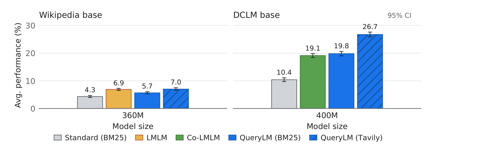
左组是 Wikipedia 360M。常规模型使用同组检索的八任务均值是 4.3，LMLM 为 6.9。QueryLM 用 BM25 为 5.7，用 Tavily 为 7.0。阅读时先固定底层检索源再比较模型：同源的 5.7 低于 LMLM 的 6.9，即使分任务大多数赢，仍被 PopQA 与 WebQuestions 的幅度拖动。再看开放到替代检索服务时是否可获益，蓝色斜纹达到 7.0，提升随外部后台同时变化。右组使用过训练 DCLM 400M，常规 10.4，Co-LMLM 19.1，QueryLM 用 BM25 19.8、用 Tavily 26.7。等检索条件下两种搜索方法接近，不能把 26.7 与 19.1 的全部差距归给预训练目标。图例中的基座分数采用四示例答案包含率，也不能与 SFT 裁判分数拼接成单条学习曲线。误差条体现题目抽样，在极窄差距处要保留不确定性。此图 400M 文档预算高于下一图的同尺寸主条件，不能把同一个横坐标标签作为相同算力。开放检索源带来的增益证明工具接口可借力更好后台，但没有单独给出访问不同索引时的每次请求延迟与账单。在同一个语料来源下仍可能有不同检索形式，例如实体键精确查询与开放式词项查找能找到的事实不同。这里的接近说明开放 query 是一个可以比较的接口，尚不意味着检索索引结构可以互换。
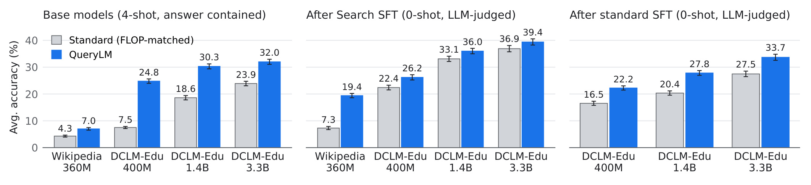
左侧分面四示例答案包含，灰色 Standard 使用对应搜索模型的查询和返回，因此同尺寸差更接近两类基座同时读到证据时的响应差。Wikipedia 360M 为 4.3 到 7.0；DCLM 的 400M、1.4B、3.3B 由 7.5、18.6、23.9 到 24.8、30.3、32.0。中间分面是双方用同一 Search SFT 且自行检索，裁判准确率的四组对照依次为 7.3 到 19.4、22.4 到 26.2、33.1 到 36.0、36.9 到 39.4。右侧分面是采用普通 Dolci 配方，DCLM 的 400M、1.4B、3.3B 为 16.5 到 22.2、20.4 到 27.8、27.5 到 33.7。可以根据每个分面灰蓝柱的距离判断共同工艺之后差异是否仍在。不能将基座 30.3 与 SFT 36.0 直接减出某个阶段的纯提升，因为评分标准、答案限制和是否借用查询都变了。两种 SFT 均保留灰蓝差，但两者分布不同，普通配方也见到一部分搜索示范。中间分面较接近说明搜索示范可补回部分优势，未测试更大范围的后训练预算。按附录 Table 5，1.4B 配对约 4.51 乘十的二十次方 FLOP，3.3B 配对约 23.5 乘十的二十次方。跨尺寸看左侧分面 30.3 超过 23.9 是小模型带工具胜过该更大对照的例子，等预算定义来自同尺寸的灰蓝配对。右侧分面某组均值高不代表每题集领先，Bamboogle 的题量与宽区间尤其需要和均值分开看。正式复核时应下载逐任务得分并对同题做差，别用八任务平均掩盖弱组。开放检索持续受快照、返回长度和工具切片影响，也不宜据这三幅图估算服务经济性。同一 Search SFT 的数据并非原生预训练数据的另一次简单拷贝。对话被安排为角色分隔，选择性增广，监督模型继续自己的输出并执行检索调用，因此它确实让常规基座获得搜索训练机会。这个设计比只拿从未见过搜索格式的模型当灰柱更严谨。右侧普通配方预留相对少的搜索交互深入训练，此处观察到 1.4B 的差比中间分面更大。若要选择自己的训练工艺，可先做无搜索训练、普通搜索 SFT 和重搜索 SFT 三个对照，再加同规格的前训分支，以知道优势会随指令混合怎么变化。
首页提到开放权重 SmolLM3-3B，与 400M 过训练 QueryLM 相比约少 6,700 倍预训练计算仍可在该问答均值超过对方。这个数字跨体系，QueryLM 搜索，比较对象按闭卷测试，两方没有相同部署资源或相同数据制作成本。论文列出知识问答而非推理通才的范围，模型参数标记也有额外的 value embedding 口径。可用的读法是给工具原生工作流找到一个可解释的性能例子，具体规模关系要回到同架构同预算对照。
3.2 证据跟随、事实准确性与查询分解
作者给 1,000 条已见训练文档事实构造对比，在原答案和合理的错值之间测模型偏好。此处是训练中见过的事实集合里的采样测试，目标是看模型是否用证据改写内部记忆。用模型将原本正确的检索片段改为支持反事实，再比较同一填词位置。另在八项问答用外部模型提供相同查询和证据，对生成内容进行裁判。这样“跟随被给出的内容”和“找出事实”的结论可以分开。
符号解释：$m$ 是原值相对反事实值的对数概率差，$x$ 是固定的原始上下文，$e$ 可为空、正确证据或支持错值的证据，$v_{\mathrm{orig}}$ 是原值，$v_{\mathrm{cf}}$ 是改写的候选值，$p_\theta$ 是所测模型概率。正值意味着原值仍更受模型偏好；负值意味着输出可能被反事实拉过去。若模型在两种证据之间的偏好移动更大，表示外部文本可操控其判断的程度提高，和来自外部来源的事实准确性是两条指标。
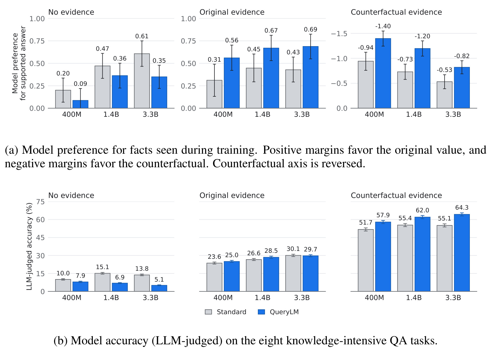
上排针对原训练事实算原值与错值的偏好。以 1.4B 图上读数为例，给原证据为 0.45 对 0.67，给反事实证据为 −0.73 对 −1.20，灰蓝差显示 QueryLM 更贴近输入。右上子图反事实纵轴反向，柱形向上并不意味着数值更大。附录 Table 11 同名微调行给出 1.4B 反事实 −0.82 对 −1.47，幅度与主图不完全一致，方向一致，两套具体端点不应混抄。下排以裁判判输出是否符合该条件的证据。3.3B 无证据 13.8 对 5.1，原证据 30.1 对 29.7，反事实 55.1 对 64.3。最后一个高分针对符合反事实答案的结果，不能解释为真实事实正确率上升。重要的是在给定的三种证据条件内怎么解读差异。反事实更容易覆盖模型权重里的旧记忆，在生产可能有两种后果：可靠的新数据库可以及时改旧答案，伪造或过时的新材料也更容易让模型信错。图中闭卷损失及正确证据条件的细小反转提醒，要同时监控证据质量、来源信任和拒绝机制。作者报告了对可控材料的敏感性，还需要在带来源和时间戳的多来源冲突条件下另外测校准。若只看右下蓝柱，会把模型照抄错误证据误认成纠错能力。图两层也提供一种区分检索错误和生成错误的实用检查。先在生成器完全相同的提示中替换返回材料，再记录它认可的值或引用支持，最后在证据之外建立人工真值。只有第二步上升而第三步下滑时，故障更可能来自过度服从搜索结果。进一步可以固定真实证据的比例，改变错误材料的排序、冲突方向和是否有出处，在长文档里测模型能否忽略局部言之凿凿的噪声。不能把基于局部概率的偏好与最终自由回答的每题正确性合成一个比率。
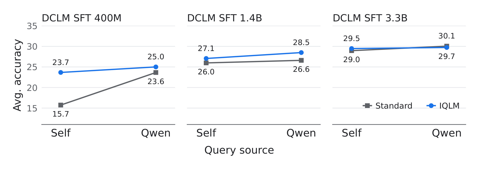
按横轴从模型自产 query 转为外部 Qwen 供词，纵轴是八项裁判准确率。400M 常规模型从 15.7 到 23.6，QueryLM 从 23.7 到 25.0。小模型中，以相同更强的查询替换后两条线的差变小，说明起点差异有一部分来自寻找材料的能力。仍有残差，可能来自证据响应，也可能与输入统计的差异有关，凭两个柱子不能唯一给出因果分解比例。1.4B 常规 26.0 到 26.6，QueryLM 27.1 到 28.5，差值未收敛；3.3B 两条线在 29–30 左右接近，外部模型改查询带来的边际收益较小。图中使用同一个外部查询生成者是为固定可控因素，它不必然是每条请求的最优词，三个量级也不可假定模型完全等价。替换 query 会连带换召回列表，所以该实验能估计查询路径效果，不能排除证据分布与模型适配的交互。实际可由同一请求预先保存自产和外部的检索返回，让不同版本都读这两份资料，形成生成者与读者的交叉表，再增加带来源冲突的回放。如果仅保留最终答案，用户可能看到小规模协议受益较大，却不知道搜索阶段还是语言生成阶段造成差异。记录调用前缀和工具结果的版本可以让这一消融在后端换索引时复算。
FreshQA 的 500 道测试另检查事实时效与错误前提。基座的 QueryLM 有搜索，Standard 闭卷，较强差异包含工具可用性；在共同 Search SFT 两边都查找时，400M 平均 19.2 对 20.6，1.4B 27.2 对 26.2，3.3B 24.2 对 25.4。尤其 1.4B 有负向，无法把时效问题概括成共同 SFT 后全面领先。HaluEval、RAGTruth 的附录用给定真实支持答与幻觉答的平均 token 似然比较，有相关证据时多有提升；那是成对偏好，不是自由生成后自动获得同等事实准确率。可以把支持偏好、反事实服从率和拒绝错误前提并列，避免不同标签定义互相替代。
3.3 检索源、证据内容与开销
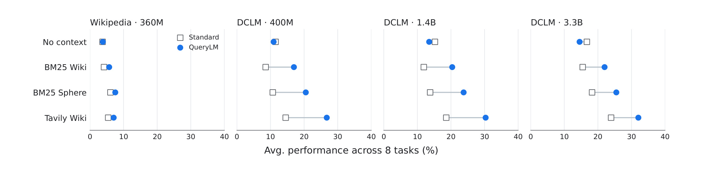
横轴是八任务的答案包含均值，按 Wikipedia 360M 与 DCLM 三个尺寸分列，纵向条件依次是无上下文、Wikipedia BM25、Sphere BM25 与 Tavily。DCLM 1.4B 闭卷为 15.2 对 13.5，改用 Wikipedia BM25 后变为 11.9 对 20.4，Sphere 为 13.8 对 23.8。由此不能把闭卷差泛称为模型不懂内容，因为试验显示它能在合适来源支持下响应更好。也不应认为加任何检索就必然提升，Standard 的固定比较中某些简单索引给的资料会扰乱已知答案。图的位置差主要测读者在工具条件下使用返回，常规基座借用 QueryLM 查询与证据，所以两条线提供同输入观察。此消融对多跳也只允许一次查询，图中更高的 Tavily 不应当成完成两跳推理的新增收益。Wikipedia 主训练的小模型限制 Tavily 查 Wikipedia，而 DCLM 条件查开放网，检索范围不同。尝试部署时建议记下索引域限制、查询轮数、原始返回和清洗后长度，以排除通过放开数据范围掩盖读者退化的情况。闭卷分数的对照还对应一笔机会成本。固定预算内换掉原始文档会使模型减少接触某些人工写出的事实，却可能让它更熟悉寻找和理解证据。故障降级能容忍多大变化取决于搜索系统的可靠性。
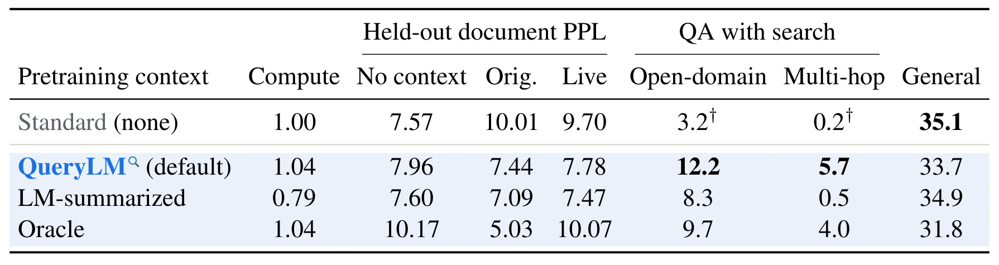
从左到右对照相对算力、留出文档的原文预测困惑度与问答。相同 Wikipedia 范围和查询下，默认检索原文的开放域与多跳为 12.2 和 5.7。用摘要压缩后到 8.3 和 0.5，按后缀构造的 oracle 到 9.7 和 4.0。再读中间三列，oracle 使用原证据 PPL 为 5.03，明显低于默认的 7.44；切成线上式的真实检索，oracle 变成 10.07，默认 7.78。过于容易的训练材料有可能让模型依赖证据已经整理好的结构，真实输入噪声出现时难以转用。这个解释是从操作和指标得到的可检验假设，表中也改变了摘要长度与处理算力，不宜归因为文本摘要一定让模型变差。灰色常规的问答为带标记的闭卷值，不能当成不同响应均可借用的严格工具对照。三列困惑度看的是原文续写，方向更低更好；右侧才是知识问答与通用能力，指标高才好。高质量训练响应的定义如果只看“预测已知后文更轻松”，结果可能与部署目标反向。因此需要额外抓取带真实噪声、过期内容和表述变化的检索结果做盲测，避免原文困惑度最低的配置在跨期服务中掉点。
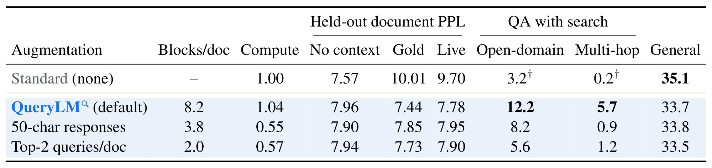
默认在留出文档平均插入 8.2 个工具块，处理算力 1.04；限制到五十字符得到 3.8 块和 0.55，按每文档只保留两个位置则为 2.0 和 0.57。五十字符除了减少每次上下文，还让部分插入不再通过过滤，表中块频率同时变化。开放域与多跳分数由 12.2／5.7 降到 8.2／0.9 或 5.6／1.2，明显差幅集中在更需组合证据的指标。与这一受控小实验区分，论文还为 3.3B Top-2 重作同算力训练，Search SFT 后八任务均值 37.9，介于 Standard 36.9 与完整 QueryLM 39.4，普通 SFT 后 32.5 也介于 27.5 和 33.7。这显示把减少下来的计算用于更多原始文档后，质量损失没有小实验那样直接。单纯把块数从八个降成两个，不会等比例降低系统成本：标注调用、输入处理、索引检索和训练吞吐是不同占比，高频但廉价的简单事实也可能只是增加无效搜索。落地时分开扫描候选覆盖与每条可留词元，再对高价值查询分桶调整预算。表头的算量以该 Wikipedia 配对基准归一，不能将 0.55 解读为生产每秒吞吐提高相同倍数。
3.4 算力匹配与闭卷通用能力
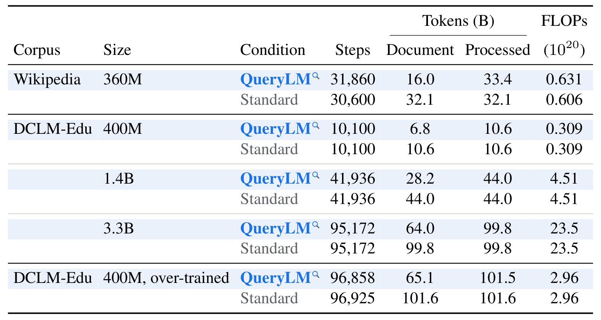
表按语料、模型尺寸和训练条件并排。以 DCLM 1.4B 为例，两边均 41,936 步、实际处理 44.0B 词元和 4.51 乘十的二十次方 FLOP。在这份固定处理账本里，QueryLM 原始文档 28.2B，Standard 44.0B；搜索块用掉约 15.8B 的处理位置。3.3B 是 64.0B 原文、99.8B 总处理，对照 99.8B 全为原文，附录说常规版本要重复部分语料；总词元数相等不意味着见过的独立文档数相同。Wikipedia 相对难做到严格等额，33.4B 与 32.1B 总处理并不相等，FLOP 0.631 对 0.606，相对约多百分之四。相同 DCLM 400M 另有过训练条件，总代价 2.96，不能拿一般 0.309 的模型直接重算 Figure 4 柱子差。表中的参数列也只是报告规模，DCLM 标称量排除用于值的额外嵌入参数，实际保存参数远大于标称。附录指出两组较大的常规与搜索模型的末段学习率衰减占比略有不同。读这些记录能确认主要对照匹配哪些变量，也能看到数据覆盖、优化器轨迹和索引加工没有完全扣除。复现若希望比较相同新文档曝光，应再做第二条固定原文样本的基线并分别报告额外工具算量。
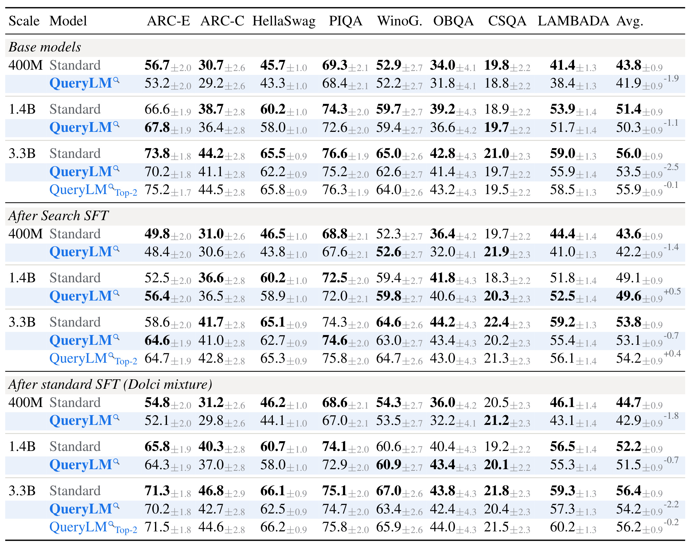
表分为基座、共同 Search SFT、共同普通 SFT 三段，列出八个无需检索的常识和语言理解集合。基座同尺寸三组均值，完整 QueryLM 比常规低约 1.9、1.1、2.5 个百分点。搜索微调后三组差约 −1.4、+0.5、−0.7；普通微调后约 −1.8、−0.7、−2.2。合并两个 SFT 表说一般技能完全恢复，对这里最后一组并不成立。尤其无搜索时，模型没有外部输入去填补预训练投给工具块的容量。3.3B Top-2 在三段相对标准的差为 −0.1、+0.4、−0.2，区间内与对照相近，配合主问答可见其位于折中点。通用均值小差值可能由单项退化和单项改善抵消，例如闭卷阅读续文与选择题的输入形式不同，应维持按任务行分析。图里的值使用附录定义的零示例条件，答案选项按长度校正的条件似然排序，不能和基座检索的四示例包含率混为一套分数。若产品具备搜索失败降级路径，通用结果决定底线，而不是一个可以忽略的侧指标。测试还可检查同一输出预算在开放式指令、结构化调用与普通问答上表现是否一致，以及工具被禁用时模型有没有反复启动不可能完成的查询。
作者列出的 Wikipedia 约 316 Hopper GPU 小时、DCLM 约 2,240 Blackwell GPU 小时对应实验组的预训练，不汇入标注、消融及部分附加比较。不同 GPU 类型的小时也不可直接相加推算费用。完整复现账本应单列文档抓取和索引过滤、标注模型推理和排序、学生训练与 SFT、Web 工具推理账单和时间。工具回复经常很长时，即使搜索触发频率低，回填耗时 P95 仍可能改写整体时效。实验的硬件账本和公式提供分解，但并未给出单用户延迟、生产高并发或索引维护成本的实测结果。
4. 总结
4.1 可采用的训练与评估设计
这项工作最明确的证据是，在给定语料、相近计算和对应的 SFT 条件内，把搜索动作和响应阅读同时加入下一词训练，比将外部检索全部留到预训练之后更有机会提升知识问答。作者既提供常规模式下仅改变预训练的对比，也固定基座评估用的检索返回，另用外部查询源测试查询质量贡献。多个节点的观察比一条总体问答分更适合为下一步试验定位。支持和反事实两种结果同时牵引模型，显示外部上下文能更有效改变预测；要获得更好的事实准确性，仍需要可置信和适当更新的索引。主证据约束在作者的共同监督微调配方和部署提示，未穷举进一步工具式学习能恢复多少差距。
推荐或商品搜索可先落地一项受控实验，用旧快照还原模型当时能读到的属性而不是回填最新答案。先采用短调用结构，插入到需要核验库存、兼容规格或作者身份的目标位置附近，单独记录工具响应经审核后是否支持正确后缀。评估同时保留“同一外部结果两模型分别作答”和“自由查询完整流程”两档。若自由查询优势大而固定证据差异很小，就优先改查询器。若位置触发变多却无答案提升，可查召回无证据比例和内容过期情况。再在固定延迟、固定工具次数里比较缩短结果长度和减少调用密度的两档增强，对照实时路径的质量与费用。
4.2 证据边界和后续验证
第一，主评估由实验器启动查询。自然决定是否查、在二次查找后能否停止、工具失败是否回退，仍要加入未强制触发的闭环任务。第二，关联阈值利用原文后缀，且返回来自普通网页索引。查询只由前缀产生降低了直接泄漏风险，但索引快照和来源相似性仍需审计。第三，大部分改善来自知识问答实验，通用闭卷有部分损失，FreshQA 共同微调在不同规模方向不一。第四，相同 token 预算会分配给不同比例的原文，学习率衰减与重复文档也有细差。跨模型规模、不同搜索引擎与闭卷外部对照不具备同一基线。第五，正文优先数字与附录有少量端点差异，反事实图中尤其应清楚标出取图还是取表。
具体跟进可以分三路。一是用 Top-2、唯一人工审过语料候选和人工拟合失败样例，固定语料拆分、模型大小及处理算量，记录检索前后预训练任务损失与真实答案。二是准备含过期证据、无结果、两条来源冲突的留出测试，分别统计拒答、引用事实支持和错误跟随，并保留同一检索返回的对照。三是在同一工具服务和预算做倍速、超时与高并发回放，分拆检索结果取得时间、模型首词时间、上下文回填量及高峰拥塞。这样能核对论文中搜索证据的帮助是在本地小模型上经济可得，还是依赖可接受成本以外的 API 条件。对持续更新的业务，同一用户名和商品名可能链接到版本迭代，将时序索引、运行时检索日志与离线判断同时保存，才能解释训练出来的响应差最终对应哪类真实任务改善。